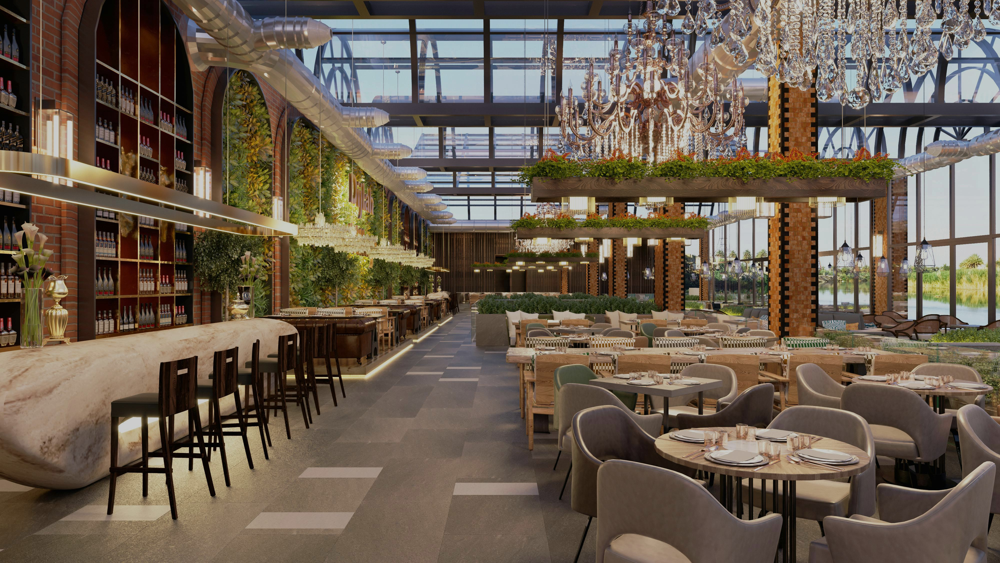

Notre Restaurant
Un restaurant au cœur de la nature
Installé au pied des montagnes, notre restaurant vous accueille dans un espace baigné de lumière, grâce à son toit entièrement vitré qui laisse entrer les rayons du soleil à toute heure de la journée.
Avec ses grandes tables conviviales et son ambiance calme et apaisante,
C’est le lieu idéal pour se ressourcer tout en savourant une cuisine inspirée de la montagne et des produits de la nature.
Chaque plat met à l’honneur des ingrédients frais et locaux, dans un cadre qui invite à la détente, entouré de verdure et de panoramas naturels.
Venez partager un moment unique, entre authenticité et sérénité.
Horaires du restaurant
Lundi à Dimanche
Petit-déjeuner : 7h00 – 10h30
Déjeuner : 12h00 – 14h30
Dîner : 19h00 – 22h00
Service en chambre : 7h00 – 22h30